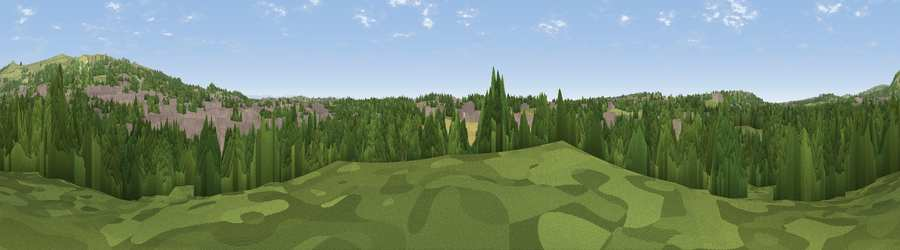

Viewpoint near Horwich
#39937 in England · top 91% of its area beats it · near HorwichWhere it is
The exact computed spot (SD 63925 09775). Click the marker for map links.
The view, rendered

A 360° render of this exact spot computed from the terrain model, tree cover and land cover — summer colours, afternoon light, calibrated against photographs of famous viewpoints. Real trees, hedges and buildings will differ in detail.
The panorama
Grey silhouette: terrain skyline in each direction (720 bearings, Earth curvature and refraction included). Dashed green: skyline with trees (+15 m) and buildings (+8 m) as obstacles. Blue strip: how far the ground is visible on each bearing.
Where the view opens
Wedge length = distance to the farthest visible ground on that bearing (vegetation-aware). Rings at 10, 25 and 50 km.
What fills the view
43% woodland · 24% grassland · 24% built-up · 8% cropland
Angular shares of the visible panorama (visual magnitude), not map area. Landscape diversity 0.55 (0–1 Shannon).
Key numbers
More beautiful places nearby
The staircase of upgrades: each row has a higher view potential than everything closer. Driving times are estimates from straight-line distance, calibrated against real road routing — check an actual route before setting out.
| Place | Direction | Drive | Score |
|---|---|---|---|
| Viewpoint near Horwich | E · 3 km | ~7 min | 61.0 |
| White Brow | NE · 3 km | ~8 min | 82.9 |
| Warton Crag | NNW · 65 km | ~88 min | 83.2 |
| Viewpoint near Grange-over-Sands | NNW · 73 km | ~96 min | 83.4 |
| Viewpoint near Cartmel | NNW · 75 km | ~99 min | 87.0 |
| Viewpoint near Cartmel | NNW · 75 km | ~99 min | 87.2 |
| Viewpoint near Finsthwaite | NNW · 83 km | ~107 min | 90.3 |
| The Knoll | S · 322 km | ~321 min | 91.0 |
53.58331, -2.54638 · source: screening · position refined by local search. Computed location — check access rights before visiting.